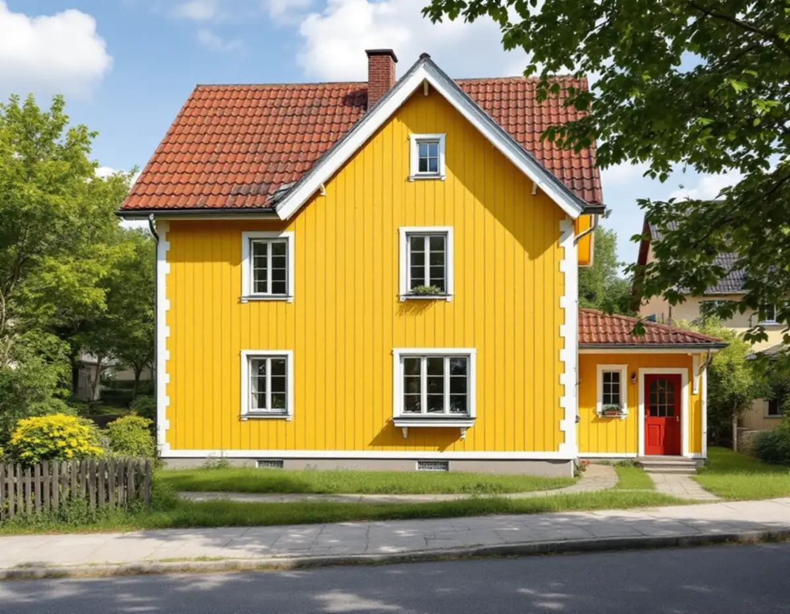
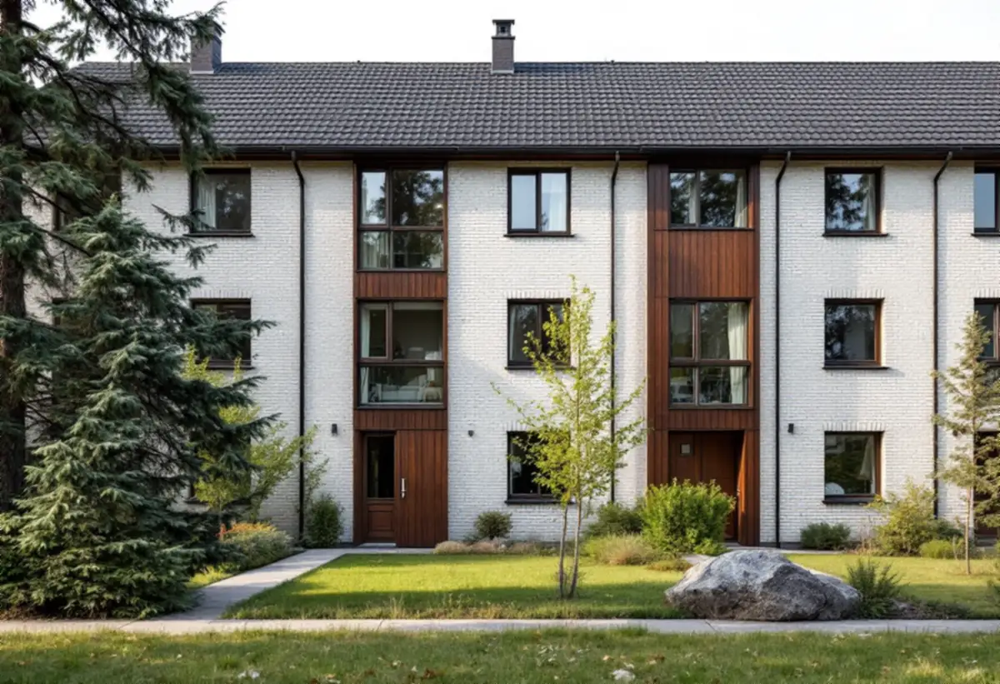

Platsbesök och provskrapning
Vi går runt huset, ser vad som är trä, puts och tegel och tar reda på vilken färgtyp som sitter på fasaden.
Ska du anlita en målare i Huddinge avgör fasadens material mer än kulörkartan: träpanel på ett egnahem i Stuvsta, spritputs och tegel på en 50-talsvilla eller panel och mexitegel på ett radhus från 1970-talet. Vi målar fasader, fönster och rum i hela kommunen och börjar med ett gratis platsbesök.

Huddinges kulturmiljöprogram delar in småhusen efter epok. Egnahemsområdena från 1910–40-talet, till exempel Stuvsta, Snättringe, Segeltorp och Fullersta, präglas av träpanel, enkelt spröjsade fönster och tegeltäckta sadeltak eller brutna tak. Här är nästan allt som syns målat trä – panel, knutar, foder, vindskivor och bågar – och det är detaljerna som bär husets karaktär.
Folkhemsåren gav små villor, kedjehus och radhus i trä, puts eller fasadtegel, enligt programmet i ljusa eller mustiga kulörer. På 1950-talet blandades ofta rött eller gult tegel med grov spritputs eller trä. En sådan fasad är tre material som sköts på tre sätt, inte en yta som målas i ett svep.
Under rekordåren dominerade grupphusen, och i slutet av 1970-talet byggdes radhusområden som Sörskogen och Utsälje. Programmet nämner tegel och kalksandsten, så kallat mexitegel, ofta kombinerat med panel och mustiga färger som blev ljusare mot 1980-talet. Vid Mellansjö och Gömmaren finns de gamla sportstugorna, byggda i en tid då den lilla röda stugan nära vattnet var idealet.

Riksantikvarieämbetets skrift om byggnadsmåleri ger ett tydligt råd: vid ommålning bör man i de flesta fall hålla sig till den färgtyp som redan sitter på huset. Att lägga moderna färger över äldre beskrivs som en teknisk risk som gör nästa underhåll svårare. Därför tar vi reda på vad som finns på fasaden innan vi föreslår färg, ofta genom att skrapa på ett undanskymt ställe.
På Huddinges blandfasader från 1950-talet bedöms puts och trä var för sig. Spritputs ska enligt samma skrift rengöras skonsamt med våt- eller vattenblästring snarare än med stålborste, och gamla lagningar med fel bruk kan behöva göras om innan något målas. Tegel och mexitegel på grupphusen lämnar vi omålat; där gäller jobbet panelen, foder och fönster runt omkring.
Skriften påpekar också att söderfasader behöver målas oftare än norrfasader, och fönster oftare än väggen runt dem. På ett egnahem med fri söderfasad kan det därför vara rimligt att måla södersidan och fönstren nu och låta norrsidan vänta.
Programmets råd gäller alla småhusområden från respektive epok, även de som inte är utpekade. För rekordårens småhus står det att den ursprungliga färgsättningen bör vara vägledande vid ommålning, med mustiga kulörer som gult och brunt som tongivande.
I områden i omvandling, där gamla sommarstugor blandas med nyare villor, avråder programmet från fasadkulörer i vita nyanser och föreslår rött, brunt, grönt och gult. För egnahemmen är rådet att husets ursprungliga arkitektur ska värnas. All bebyggelse omfattas dessutom av varsamhetskravet i plan- och bygglagen.
Råden är ingen lovplikt i sig, men de visar vad kommunen väger in. Ska ett radhus i en enhetlig länga byta från mörkbrunt till ljusgrått är det klokt att först prata med grannarna eller samfälligheten. Gäller arbetet mer än ytan, se villarenovering.
Huddinge kommun skriver på sin sida om fasadändring att ett en- eller tvåbostadshus inte behöver bygglov för att ändra utseende, så länge byggnaden eller området inte är kulturhistoriskt värdefullt och detaljplanen inte kräver lov. Att renovera fasaden med samma material och samma färg är också lovfritt. Om huset ligger i ett kulturmiljöområde ser du i kommunens webbkarta.
Kulturmiljöprogrammets översikt pekar ut särskilt värdefulla miljöer, bland dem Centrala Stuvsta, Sörskogen, Mellansjö och Östra Skogås. I sådana miljöer krävs enligt kommunen lov för att ändra husets utseende, till exempel med ny kulör. Boverket förklarar dessutom att ett byte av färgtyp, till exempel från linoljefärg till plastfärg, inte är ett kulörbyte men kan påverka husets yttre karaktärsdrag. I ett utpekat område kan alltså även en ommålning i samma nyans behöva prövas om färgen är av en annan sort.
Inomhus styr underlaget mer än reglerna. I ett egnahem från 1920-talet kan det finnas äldre färgtyper under senare lager. Riksantikvarieämbetet framhåller att det ofta räcker att rengöra milt och bättra skadorna med samma färgtyp, vilket dessutom gör nästa renovering lättare. I yngre hus är väggarna oftare skivor som spacklas, slipas och målas två gånger.
Utomhusmålning görs enligt samma källa under april–september, medan rummen kan målas året runt i ett uppvärmt hus. Fasaden passar alltså på sommaren och vardagsrum, hall och trapphus på vintern.
Vi går runt huset, ser vad som är trä, puts och tegel och tar reda på vilken färgtyp som sitter på fasaden.
Vi kontrollerar tillsammans om fastigheten ligger i ett kulturmiljöområde eller har bestämmelser i detaljplanen.
Fasader, fönster och rum redovisas var för sig, så att du kan välja ordning och omfattning.
Lös färg skrapas bort, puts rengörs skonsamt, skadat trä lagas och ytor som ska målas får torka.
Fasaden målas under den torra säsongen; rum målas när det passar dig, även vintertid.
Vi går igenom resultatet och skriver upp färgtyp och kulör, så att nästa ommålning blir enkel.
Skatteverket räknar målning av fasader, fönster, väggar, tak och golv samt tapetsering som rotarbete i ett småhus. Avdraget är 30 procent av arbetskostnaden, högst 50 000 kronor per person och år, och tillsammans med RUT högst 75 000 kronor. Färgen räknas som material och ger inget avdrag. Vi drar avdraget direkt på fakturan.
I en bostadsrätt ger bara arbete inne i lägenheten avdrag, inte fasad, balkong eller utsidan av fönster. Målning av staket och murar ger inte avdrag i någon boendeform, enligt Skatteverkets lista.
Mest påverkar underarbetet: hur mycket färg som släpper, om puts eller trä behöver lagas och hur många detaljer huset har. Ett egnahem med spröjsade bågar, foder och knutar tar längre tid per kvadratmeter än en slät panel, och på en brant tomt styr terrängen hur ställningen kan stå.
Platsbesöket är gratis, och du får ett skriftligt kostnadsförslag som visar vad som ingår.
Fasad, fönster och invändig målning.
Målare i Stockholm →Takbyte, takbesiktning och plåtarbeten.
Takläggare i Huddinge →Stuvsta, Snättringe och Skogås.
Takrenovering i Huddinge →Avlopp, egen brunn och ritningar.
Attefallshus i Huddinge →Grannar, tomtgräns och lovärendet.
Byggföretag i Huddinge →Nytt trä i en gammal fasad.
Fasadmålning i Huddinge →Egnahem, grupphus och 70-talsvillor.
Fönsterbyte i Huddinge →Okopplade bågar, tätning och lagning av bottenstycken.
Fönsterrenovering i Huddinge →Slipa golvet och byt ytbehandling.
Golvslipning i Huddinge →Grupphus, egnahem och stugor.
Köksrenovering i Huddinge →Rännor, dagvatten och brutna tak.
Plåtslagare i Huddinge →Tyngre tak, stugor och landsbygd.
Takbyte i Huddinge →Ny tapet på lagad spännpapp.
Tapetsering i Huddinge →Råd för tre epoker av småhus.
Tillbyggnad i Huddinge →Rekordårens hus inifrån och ut.
Totalrenovering i Huddinge →